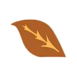

JFC Tobacco Corp. / Tabacalera Hoja Boricua
Tabacalera · Mayagüez, Puerto Rico
JFC Tobacco Corp. / Tabacalera Hoja Boricua aparece en La Hoja Boricua, la guía de cigarros de artesanos boricuas, con 3 cigarros en el catálogo.
Sus cigarros
- Hoja Boricua Vitolas: Corona, Robusto, Toro, Churchill · Fortaleza: Media
- Hoja Boricua Gran Reserva Fortaleza: Fuerte
- Puerto Rico 965 Vitolas: Robusto · Fortaleza: Suave